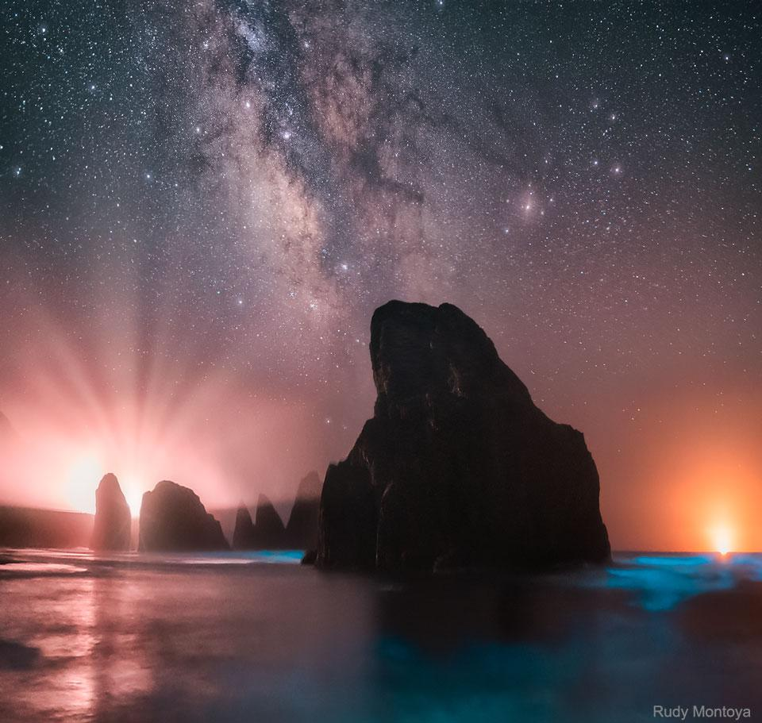

Central Lunar Eclipse
Reddened by scattered sunlight, the Moon in the center is passing through the center of Earth's dark umbral shadow in this July 27 lunar eclipse sequence. Left to right the three images are from the start, maximum, and end to 103 minutes of totality from the longest lunar eclipse of the 21st century. The longest path the Moon can follow through Earth's shadow does cross the shadow's center, that's what makes such central lunar eclipses long ones. But July 27 was also the date of lunar apogee, and at the most distant part of its elliptical orbit the Moon moves slowest. For the previous lunar eclipse, last January 31, the Moon was near its orbital perigee. Passing just south of the Earth shadow central axis, totality lasted only 76 minutes. Coming up on January 21, 2019, a third consecutive total lunar eclipse will also be off center and find the Moon near perigee. Then totality will be a mere 62 minutes long.